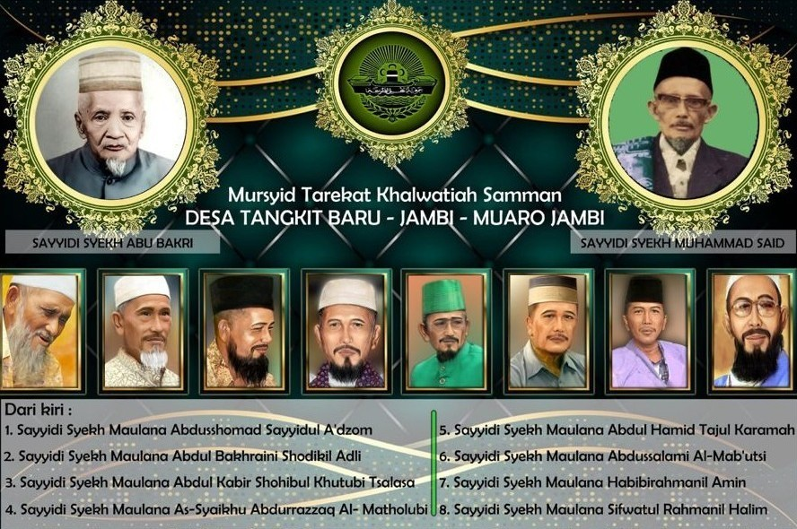
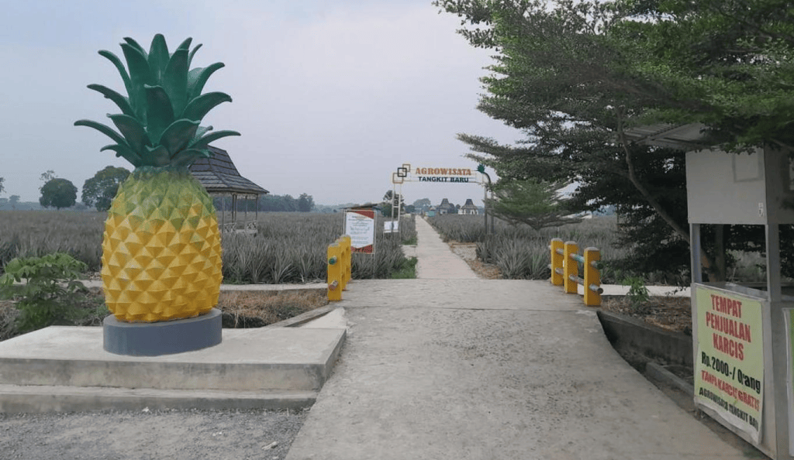
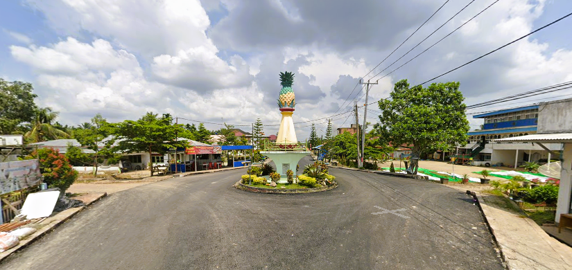

Sejarah Desa Tangkit Baru

Desa tangkit baru mulai dibangun pada tahun 1968 yang dipimpin oleh seorang pemimpin yang bernama Syekh Muhammad Said. Beliau merupakan seorang pemimpin pemberani berkat keyakinannya untuk merubah lahan rawa tersebut menjadi tempat tinggal dan perkebunan. Syekh Muhammad Said adalah salah tokoh adat desa dan dilahirkan di desa Liu, Turungpakke Kecamatan Majauleng Provinsi Sulawesi Selatan. Syekh Muhammad Said memiliki dua latar belakang keluarga yaitu keluarga Ksatria dan Rasulullah SAW. ia menikah pada umur 24 tahun dengan seorang gadis yang berketurunan yang notabene masih cicit mendiang Andi Pawellangi raja negeri Akkajeng yaitu putri dari Andi Mandasini yang bernama Andi Mardjan Petta Unga yang usianya baru 15 tahun. Syekh Muhammad Said juga mendirikan banyak desa salah satunya desa Tangkit Baru, yaitu tempat tinggal dan peristrirahatan terakhir puang Muhammad, selain desa Tangkit Baru, ia juga mendirikan beberapa desa yaitu desa Liu, desa Kalukuang, desa Bonang- Bonang, desa Mafili, desa Mandai dan desa Sungai Siau Dalam. Selain desa, beliau juga mendirikan pondok pesantren Raudlatul Muhajirin yang berada di desa Tangkit Baru.
Filosofi

1. Dinamika Identitas dan Adaptasi Budaya
Asal-usul dan Perubahan Demografi: Sejarah Tangkit Baru menunjukkan bagaimana sebuah wilayah dapat mengalami transformasi identitas yang signifikan. Migrasi besar-besaran suku Bugis pada tahun 1960-an mengubah komposisi demografi secara drastis, hingga mayoritas penduduk saat ini adalah orang Bugis. Interaksi dan Akulturasi: Peristiwa ini mencerminkan filosofi bahwa identitas suatu komunitas tidak statis, melainkan terus berkembang melalui interaksi dan akulturasi antarbudaya. Penduduk asli Jambi berbaur dengan masyarakat pendatang, menciptakan tatanan sosial dan budaya yang baru.
2. Peran Manusia dalam Pembentukan Wilayah dan Kemajuan
Inisiatif dan Kepemimpinan: Pembentukan "Kampung Baru" oleh Puang Muhammad Said dan asistennya menunjukkan peran krusial individu atau kelompok dalam merintis dan mengembangkan suatu wilayah. Inisiatif mereka dalam membuka hutan rawa menjadi kawasan pertanian adalah contoh nyata dari agen perubahan. Kerja Sama dan Gotong Royong: Kemajuan Desa Tangkit, termasuk pembentukan kelompok pengajian dan diversifikasi mata pencarian, ditekankan sebagai hasil dari kerja sama antara masyarakat dan pemerintah. Ini menggarisbawahi filosofi bahwa pembangunan berkelanjutan membutuhkan partisipasi kolektif dan semangat gotong royong.
3. Hubungan Manusia dengan Lingkungan dan Pemanfaatan Sumber Daya
Transformasi Lahan: Desa Tangkit yang awalnya merupakan hutan rawa karet, kemudian diubah menjadi lahan pertanian dan pemukiman. Ini menunjukkan bagaimana manusia berinteraksi dengan lingkungan, mengubahnya untuk memenuhi kebutuhan hidup dan menciptakan peradaban. Adaptasi Ekonomi: Perubahan mata pencarian dari pemotong karet menjadi petani dan peternak, serta diversifikasi tanaman, mencerminkan kemampuan masyarakat untuk beradaptasi dengan kondisi ekonomi dan memanfaatkan sumber daya alam yang ada secara optimal.
4. Pentingnya Sejarah Lokal untuk Pemahaman Diri dan Nasionalisme
Pelestarian Sejarah: Penelitian ini sendiri memiliki filosofi pentingnya menelusuri dan melestarikan sejarah lokal. Dengan memahami asal-usul dan perkembangan desa, generasi muda dapat mengetahui keadaan sebelumnya dan menumbuhkan rasa cinta terhadap daerahnya. Kontribusi pada Sejarah Nasional: Sejarah lokal seperti Tangkit Baru dianggap dapat memperkaya sejarah Nasional, yang pada gilirannya dapat mempererat persatuan dan kesatuan bangsa. Ini menunjukkan bahwa pemahaman tentang bagian-bagian kecil (lokal) sangat penting untuk memahami keseluruhan (nasional).
5. Proses Otonomi dan Penentuan Nasib Sendiri
Pemekaran Wilayah: Pemekaran Desa Tangkit dari Sungai Terap dan kemudian pemekaran Tangkit Baru dari Desa Tangkit, menunjukkan proses alami dalam perkembangan suatu komunitas untuk mencapai otonomi dan kemampuan mengatur rumah tangganya sendiri. Ini sejalan dengan filosofi hak masyarakat untuk menentukan nasib dan mengelola wilayahnya berdasarkan kebutuhan dan aspirasi lokal.
Tokoh masyarakat (Anreguru)

Di balik berdirinya desa tangkit baru ada tokoh tokoh masyarakat yang kerap di sebut (Anreguru) oleh kalangan suku Bugis. Ia yang bernama Puang Syekh Muhammad Said, Beliau membawa anak dan para anggota dalam berdirinya tangkit baru.
Nama-nama anak Puang Syekh Muhammad Said (Puang Muhammad Said) :
1. H.Andi Tolla' (Puang Petta Haji Billa') / (Sayyidi Syekh Maulana Abdussomad Sayyidul A'dzom)
2. H.Andi Samsul Bahru (Puang ARL. Petta Haji Jaga) / (Sayyidi Syekh Maulana Abdul Bakhraini Shodikil Adli)
3. Drs.H.Andi Sanisiyu (Puang Petta Haji Dunni) / (Sayyidi Syekh Maulana Abdul Kabir Shohibul Khutubi Tsalasa)
4. H.Andi Pawellangi (Puang Petta Haji Kasau) / (Sayyidi Syekh Maulana As-Syaikhu Abdurrazaq Al-Matholubi)
5. Andi Martunis (Puang Petta Bau') / (Sayyidi Syekh Maulana Abdul Hamid Tajul Karamah)
6. Drs.Andi Abdussalam (Puang Petta Maula) / (Sayyidi Syekh Maulana Abdussalami Al-Mab'utsi)
7. Drs.Andi Zainal Abidin (Puang Petta Rabbi) / (Sayyidi Syekh Maulana Habibirahmanil Amin)
8. Drs.Andi Pajung (Puang Petta Zulaifi) / (Sayyidi Syekh Maulana Sifwatul Rahmanil Halim)
Nama Nama Pengikut / Anggota Gotong Royong (AGR Tahap 1 Tahun 1968) :
1. Nurdin Taqwa (Daeng Patau)
2. Abdul Gaffar MR (Daeng Macenning)
3. Abdul Gani MR ( Daeng Matolla)
4. Nuhudakik (Daeng Pablilla)
5. La Cak (Daeng Materu)
6. Baderuddin LW (Daeng Palallo)
7. Hmazah Paragai (Daeng Matajang)
8. Ahmad/Ambo iyye' (Daeng Madimeng)
9. Muhammad Ali Hanafi ( Daeng Manurung)
10. M.Yakub (Daeng Masua)
11. M.Jafar ( Daeng Maggading)
12. M.Musa (Daeng Paware)
13. M.Saleng S (Daeng Palallo)
14. B.Mansur Ashaf (Kali Baso)
15. Ambo' Ella'
Nama Nama Tambahan Pengikut / Tambahan Anggota Gotong Royong (AGR Tahap 2 Tahun 1972) :
1. Samsul Paragi
2. Abdul Hafis (Daeng Malinta)
3. Lamandang (H.Mandang)
4. M.Yunus MD
5. Basput Nasir (Daeng Simpoang)
6. Abdul Muin S
7. Baso Nurdin
8. Muhammad Rafiq
9. M.Arifin MD
10. Baso Barang
Tempat wisata

Desa Tangkit Baru dikenal sebagai salah satu daerah penghasil nanas terbaik di Sumatera, khususnya di Kabupaten Muaro Jambi. Kebun nanas yang ada di sini telah dikelola oleh masyarakat lokal sejak lama. Namun, baru tahun 2020 kebun nanas di Desa Tangkit Baru diubah menjadi destinasi agrowisata yang menarik bagi para pengunjung. Upaya ini bertujuan untuk tidak hanya mengedukasi masyarakat tentang pertanian yang berkelanjutan, tetapi juga meningkatkan perekonomian lokal melalui sektor pariwisata. Terletak di Kecamatan Sungai Gelam, Agrowisata Tangkit Baru dapat dijangkau dengan mudah dari kota Jambi, yang berjarak sekitar satu hingga dua jam perjalanan dengan kendaraan. Akses jalan yang baik dan pemandangan alam yang indah menjadikan perjalanan menuju desa ini semakin menyenangkan. Pengunjung akan disambut dengan suasana pedesaan yang asri, jauh dari keramaian kota, sehingga memberikan pengalaman yang menenangkan.
Aktivitas di Agrowisata Tangkit Baru.
Agrowisata Tangkit Baru menawarkan berbagai aktivitas menarik yang dapat dilakukan oleh pengunjung, baik yang datang bersama keluarga, teman, maupun secara individu. Berikut adalah beberapa aktivitas utama yang bisa dinikmati di agrowisata ini:
1.Menikmati Nanas Segar dari Kebun
Salah satu daya tarik utama Agrowisata Tangkit Baru adalah kebun nanas yang luas dan subur. Pengunjung dapat merasakan sensasi memetik nanas langsung dari pohonnya dan menikmati buah yang masih segar. Nanas di kebun ini dikenal memiliki rasa yang manis dan segar, karena ditanam dengan cara alami tanpa menggunakan bahan kimia berbahaya. Aktivitas memetik nanas ini tidak hanya menyenangkan, tetapi juga edukatif, karena pengunjung dapat mempelajari cara menanam dan merawat tanaman nanas yang benar.
2.Belanja Produk Olahan Nanas
Setelah menikmati nanas segar, pengunjung juga dapat membeli berbagai produk olahan nanas yang dihasilkan oleh pengelola agrowisata. Produk-produk ini termasuk keripik nanas, sirup nanas, selai nanas, dan berbagai jenis makanan ringan lainnya yang menggunakan nanas sebagai bahan utamanya. Keripik nanas, misalnya, menjadi salah satu produk yang paling diminati oleh pengunjung karena rasanya yang gurih dan renyah, cocok dijadikan oleh-oleh. Sirup nanas yang manis dan segar juga menjadi favorit untuk dikonsumsi sebagai minuman penyegar. Semua produk ini dibuat dengan bahan baku nanas segar yang dipetik langsung dari kebun, menjamin kualitas yang tinggi.
3.Tour Kebun Nanas
Agrowisata Tangkit Baru juga menawarkan tur keliling kebun nanas, di mana pengunjung dapat diajak untuk berkeliling dan melihat secara langsung proses budidaya nanas. Selama tur, pemandu akan menjelaskan berbagai aspek terkait pertanian nanas, mulai dari cara menanam, merawat tanaman, hingga bagaimana nanas dipanen. Ini adalah pengalaman edukasi yang menarik bagi anak-anak maupun orang dewasa yang ingin tahu lebih banyak tentang pertanian dan bagaimana hasil pertanian dapat diubah menjadi produk olahan yang bermanfaat.
4.Berkunjung ke Spot Foto yang Menarik
Selain menikmati keindahan alam kebun nanas, Agrowisata Tangkit Baru juga memiliki beberapa spot foto yang instagramable, terutama di area sawah yang hijau dan subur. Pemandangan alam yang menyejukkan ini memberikan kesempatan bagi pengunjung untuk berfoto dengan latar belakang hamparan sawah yang luas, langit biru, dan pepohonan rindang. Tempat ini sangat cocok bagi para pengunjung yang ingin mengabadikan momen indah selama berada di sana, baik untuk keperluan pribadi atau media sosial.
5.Berkeliling dengan Sepeda
Untuk menambah keseruan, pengunjung juga dapat menyewa sepeda untuk berkeliling di sekitar kebun nanas dan area pedesaan. Berkendara sepeda di jalanan yang sepi, dengan udara segar dan pemandangan hijau di sekelilingnya, menjadi salah satu cara yang menyenangkan untuk menikmati alam sekitar.
6.Piknik di Area Terbuka
Agrowisata Tangkit Baru juga menyediakan area piknik yang luas, di mana pengunjung bisa duduk santai menikmati bekal makan siang sambil menikmati pemandangan alam yang tenang. Banyak pengunjung yang datang untuk merasakan sensasi piknik di tengah kebun nanas atau di tepi sawah yang hijau, sambil menikmati udara segar yang jauh dari hiruk-pikuk kota.
Tentang Tangkit Baru

Geografis
Luas teretorial wilayah desa Tangkit Baru seluas ± 1.811 Ha. batasan dengan: Sebelah Utara berbatasan dengan Desa Kasang Lopak Alai Sebelah Timur berbatasan dengan Desa Sungai Terap Sebelah Selatan berbatasan dengan Desa Tangkit Sebelah Barat berbatasan dengan Desa Kasang Pudak/ Kotamadya Jambi.
Peta Desa
Peta kontur atau Topografi desa ini berada pada dataran rendah, struktur tanah gambut (rawa lebak) dengan kedalaman gambut rata-rata 1 - 3 meter Suhu udara rata-rata 270C Ketinggian dari permukaan laut 10 meter Curah hujan rata-rata 2.611 mm/ th. Tingkat keasaman tanah PH rata-rata 3,5 - 4 Topografi desa ini potensial untuk budidaya ikan air tawar, tanaman nanas, dan perkebunan sawit.
Pemerintahan Desa
Pola minimal adalah pola yang diterapkan oleh pemerintahan desa yang terdiri dari 1 orang Kepala Desa, 1 orang Sekretaris Desa, 3 orang Kepala Urusan, 3 orang Kepala Seksi, 3 Orang Kepala Dusun, 3 orang Staf dan 12 orang Ketua Rukun Tetangga. Penyelenggaraan urusan-urusan pemerintah dan administrasi dilaksanakan oleh perangkat tersebut sebagaimana fungsi dan tugasnya masing-masing, namun pengawasan dari pelaksanaan tugas-tugas tersebut diawasi oleh 7 orang personil Badan Permusyawaratan Desa (BPD), selain mengawasi, BPD tersebut juga membuat peraturan-peraturan desa. Desa ini juga memiliki organisasi dan kelembagaan yaitu LMD, Karangtaruna, dan Tim Penggerak PKK yang terdiri dari 27 orang pengurus dan 72 orang kader, serta organisasi lainnya.
Penghasilan masyarakat
Di lihat dari geografis desa ini kebanyakan maka mata pencaharian penduduk umumnya petani, sebagian besar sebagai petani nanas, petani ikan, dan petani sawit namun masyarakat ada juga yang memilih sumber mata pencaharian sebagai karyawan, wiraswasta, pegawai negeri sipil, kerajinan tangan dan usaha jasa lainnya. Kunjungi
Tempat Pendidikan
Sumber daya manusia di desa ini cukup baik hal ini dapat terlihat pada banyaknya tingkat pendidikan penduduk alumni S1 (Strata 1) bahkan ada S2. Saat ini desa Tangkit Baru memiliki 4 unit sarana pendidikan formal yaitu SD, MIS, MTS, MAS. Selain formal juga memiliki sarana pendidikan non formal di antaranya : Pendidikan kesenian Kaligrafi, Pengajian Tradisional, Majlis Ta'lim dll.
Akses Transportasi
Posisi desa ini sangat strategis karena dekat dengan pusat pasar dan ibu kota provinsi, sehingga akses informasi relatif cepat serta mobilitas transportasi lebih dekat. Jarak dari pusat pemerintah kecamatan: 16 km jarak tempuh 20 Menit Jarak dari ibukota kabupaten : 41 km jarak tempuh 45 Menit Jarak dari ibukota provinsi : 11 km jarak tempuh 15 menit Jarak dari ibukota negara : 1.271 km jarak tempuh 18 jm